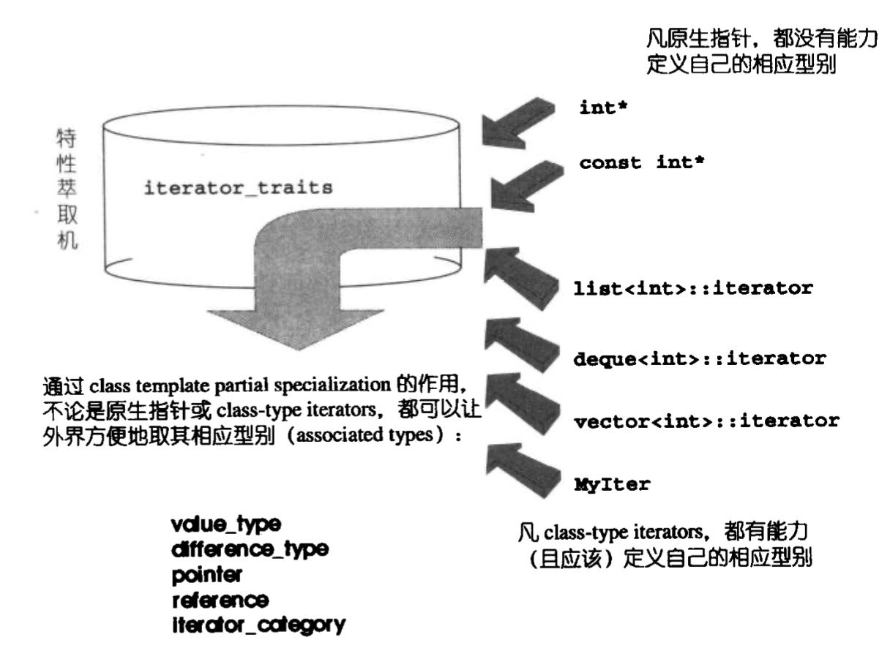

迭代器（iterator）是一种抽象的设计概念，它提供一种方法，使之能够依序访问某个容器所含的各个元素，而又无需暴露该聚合物的内部表述方式。
试想一下，如果对每一个容器都定义一个 find 算法是不是显得和冗余呢？所以，我们需要把容器和算法解耦，定义一个泛型算法对每一个容器都适用。那么，现在的问题变成了算法如何访问容器内的数据，这个时候 迭代器（iterator） 就应运而生了。
1. 什么是迭代器
迭代器其实是一种智能指针，而指针的最重要的作用就是读取内容和成员访问，所以，迭代器最重要的就是实现 operator* 和 operator-> 的重载。
所以当我们知道一个容器的内部实现细节的时候，比如说 List，就可以自己动手写一个迭代器。但是，这样就无可避免的暴露了太多 List 的实现细节。
既然无可避免，干脆就把迭代器的开发工作交给 List 的设计者就好了，如此一来，所有实现细节反而得以封装起来不被使用者看到，这正是为什么每一种 STL 容器都提供有专属迭代器的缘故。
2. 迭代器相应型别
在算法中运用迭代器时，很可能会用到其相应型别，即迭代器所指之物的型别。比如说：
1 | template <class I, class T> |
上述的参数类型推导技巧虽然可用于 value type，但是如果我们现在想让 value type 作为函数的返回值类型，那么这个方法就无法做到了。我们需要其他办法：
1 | template <class T> |
2.1. 特性萃取机 traits
更具体一点，我们设计一个 “特性萃取机”
1 | template <class I> |
这个所谓的 traits 的作用为：如果 I 定义有自己的 value_type，那么通过这个 traits 的作用，萃取出来的 value_type 就是 I::value_type。先前的 func 我们就可以改写成：
1 | template <class I> |
但是多了这一层间接性，带来什么好处呢？好处就是 traits 可以拥有特化版本
1 | template <class I> |
但是请注意，针对 “指向常数对象的指针” iterator_traits<const int*>::value_type 得到什么结果呢？根据C++的类型推导原则，获得的是 const int 而非 int，但是这显然不是我们所期望的，所以我们可以定义另一版：
1 | template <class I> |
综上，我们可以定义一个 特性萃取机

1 | template <class I> |
2.2. value type
迭代器所指对象的型别，任何一个打算与STL算法有完美搭配的 class，都应该定义自己的 value type 内嵌型别。
2.3. difference type
用来代表两个迭代器之间的距离，因此它也可以用来表示一个容器的最大容量。如果一个泛型算法提供计数功能，例如 STL 的 count() ，其返回值就必须使用迭代器的 difference_type
1 | template<class I, class T> |
2.4. reference type
如果说 p 是一个 iterator，那么 *p 的类型自然就是 T&；同理如果 p 是一个 const iterator，那么 *p 的类型就是 const T&
2.5. pointer type
如果传回一个左值，令它代表 p 所指之物是可能的；那么传回一个左值，令它代表 p 所指之物的地址同样也是合理的。
1 | Item& operator*() { return *ptr; } |
2.6. iterator category
- Input Iterator：这种迭代器所指的对象，不允许外界改变。只读（read only）
- Output Iterator：只写（write only）
- Forward Iterator：允许读写
- Bidirectional Iterator：可双向移动
- Random Access Iterator：可以随意移动
我们以 advance() 函数为例，该函数的作用的移动 Iterator
1 | template <class InputIterator, class Distance> |
1 | template <class BidirectionalIterator, class Distance> |
1 | template <class RandomAccessIterator, class Distance> |
现在，当程序调用 advance() 时，应该选用哪一份函数定义呢？如果选择 advance_II 对 Random Access Iterator 而言极度缺乏效率，原本 O(1) 的操作变成了 O(N)。所以，最直观的想法，也是我们平时写程序的时候最常用的方法，用 if-else 判断
1 | template <class InputIterator, class Distance> |
但是像这样在执行期才决定使用哪一个版本，会影响程序的效率。所以，我们最好在编译期就选择正确的版本。
重载函数机制可以达成这个目标
我们观察上面的3个 advance_xx 函数的2个参数都是型别未定的（template），要想形成重载，我们需要再加上一个参数来区分。
1 | // 我们定义5个class |
下面，我们来改写重载的 advance 函数
1 | template <class InputIterator, class Distance> |
1 | template <class InputIterator, class Distance> |
任何一个迭代器，其类型永远应该落在 “该迭代器所隶属的各种类型中，最强化的那个”。例如，int* 既是 RandomAccessIterator ，又是 BidirectionalIterator，同时也是 Forward Iterator 和 Input Iterator那么它的类型就应该归为：RandomAccessIterator
3. 总结
设计适当的相应型别是迭代器的责任。设计适当的迭代器，则视容器的责任。唯容器本身，才知道该设计出怎样的迭代器来遍历自己，并执行迭代器该有的各种行为（前进、后退、取值、取用成员...）。至于算法，完全可以独立于容器和迭代器之外自行发展，只要设计时以迭代器为对外接口就行。
traits 编程技法大量运用于 STL 实现品中，它利用 “内嵌类别” 的编程技巧与编译器的 template 参数推导功能，增强 C++ 未能提供的关于型别认证方面的能力，弥补 C++ 不为强型别语言的遗憾。